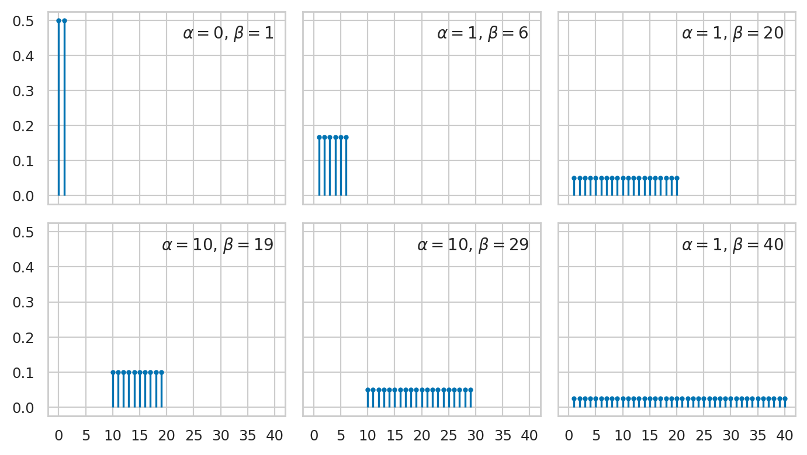
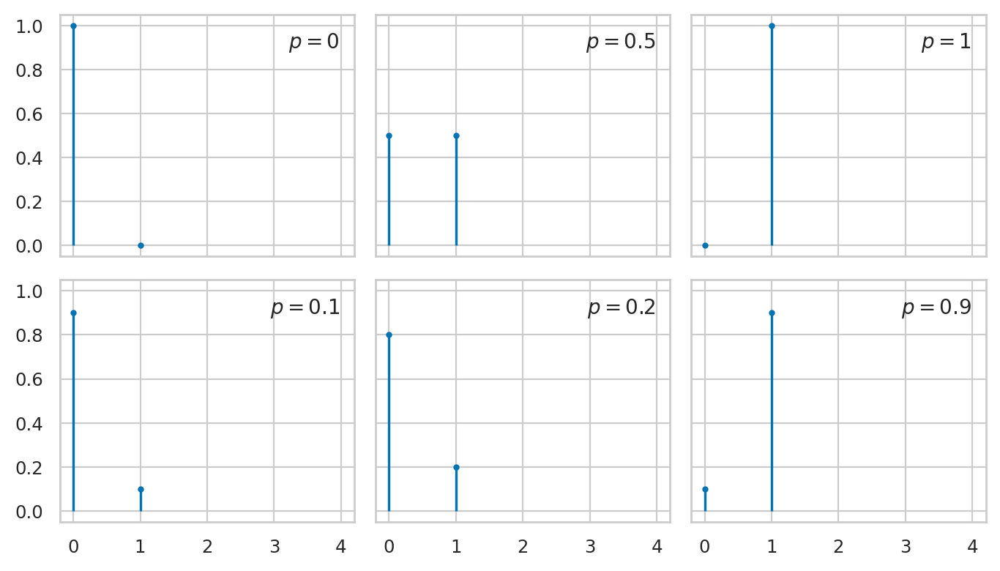
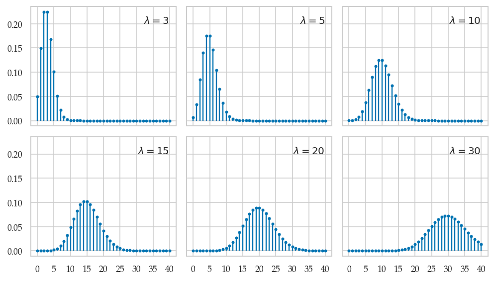
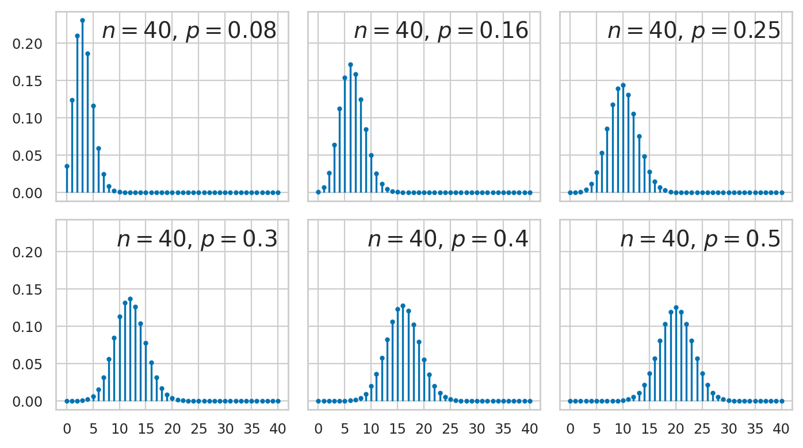

Section 2.3 — Inventory of discrete distributions
Contents
Section 2.3 — Inventory of discrete distributions#
This notebook contains all the code examples from Section 2.3 Inventory of discrete distributions of the No Bullshit Guide to Statistics.
Notebook setup#
# load Python modules
import numpy as np
import pandas as pd
import seaborn as sns
import matplotlib.pyplot as plt
# Figures setup
sns.set_theme(
context="paper",
style="whitegrid",
palette="colorblind",
rc={'figure.figsize': (7,5)},
)
%config InlineBackend.figure_format = 'retina'
# # silence annoying warnings
# import warnings; warnings.filterwarnings('ignore')
# set random seed for repeatability
np.random.seed(42)
# Download the `plot_helpers.py` module from the book's main github repo:
import os, requests
if not os.path.exists("plot_helpers.py"):
resp = requests.get("https://raw.githubusercontent.com/minireference/noBSstatsnotebooks/main/notebooks/plot_helpers.py")
with open("plot_helpers.py", "w") as f:
f.write(resp.text)
print("Downloaded `plot_helpers.py` module to current directory:", os.getcwd())
else:
print("You already have plot_helpers.py, so we can proceed.")
from plot_helpers import generate_pmf_panel
from plot_helpers import ensure_containing_dir_exists
You already have plot_helpers.py, so we can proceed.
Definitions#
Math prerequisites#
Discrete distributions reference#
Discrte uniform#
from scipy.stats import randint
model = randint
kmax = 41
ks = np.arange(0, kmax)
kticks = 5
# parameter dicts (list of lists)
params_matrix = [
[dict(low=0,high=1+1), dict(low=1,high=6+1), dict(low=1,high=20+1)],
[dict(low=10,high=19+1), dict(low=10,high=29+1), dict(low=1,high=40+1)],
]
params_to_latex = {
"low": "\\alpha",
"high": "\\beta",
}
_ = generate_pmf_panel("figures/prob/probpanels/randint_panel.pdf",
ks, model, params_matrix,
params_to_latex=params_to_latex,
kticks=kticks)
findfont: Font family ['serif'] not found. Falling back to DejaVu Sans.
findfont: Generic family 'serif' not found because none of the following families were found: Palatino
findfont: Font family ['serif'] not found. Falling back to DejaVu Sans.
findfont: Generic family 'serif' not found because none of the following families were found: Palatino

Bernoulli#
from scipy.stats import bernoulli
rvB = bernoulli(p=0.3)
rvB.support()
(0, 1)
rvB.rvs(10)
array([0, 1, 1, 0, 0, 0, 0, 1, 0, 1])
from scipy.stats import bernoulli
model = bernoulli
kmax = 5
ks = np.arange(0, kmax)
kticks = 1
# parameter dicts (list of lists)
params_matrix = [
[dict(p=0), dict(p=0.5), dict(p=1)],
[dict(p=0.1), dict(p=0.2), dict(p=0.9)],
]
params_to_latex = {
}
_ = generate_pmf_panel("figures/prob/probpanels/bernoulli_panel.pdf",
ks, model, params_matrix,
params_to_latex=params_to_latex,
kticks=kticks)

Poisson#
from scipy.stats import poisson
model = poisson
kmax = 41
ks = np.arange(0, kmax)
kticks = 5
# parameter dicts (list of lists)
params_matrix = [
[dict(mu=3), dict(mu=5), dict(mu=10)],
[dict(mu=15), dict(mu=20), dict(mu=30)]
]
params_to_latex = {
'mu': '\\lambda'
}
_ = generate_pmf_panel("figures/prob/probpanels/poisson_panel.pdf",
ks, model, params_matrix,
params_to_latex=params_to_latex,
kticks=kticks)

Binomial#
from scipy.stats import binom
model = binom
kmax = 40
ks = np.arange(0, kmax+1)
kticks = 5
# parameter dicts (list of lists)
params_matrix = [
[ dict(n=kmax, p=0.08), dict(n=kmax, p=0.16), dict(n=kmax, p=0.25) ],
[ dict(n=kmax, p=0.3), dict(n=kmax, p=0.4), dict(n=kmax, p=0.5) ],
]
_ = generate_pmf_panel("figures/prob/probpanels/binomial_panel.pdf",
ks, model, params_matrix,
kticks=kticks,
fontsize=14)
findfont: Font family ['serif'] not found. Falling back to DejaVu Sans.
findfont: Generic family 'serif' not found because none of the following families were found: Palatino

Multinomial#
See docs.
from scipy.stats import multinomial
Geometric#
from scipy.stats import geom
Negative binomial#
from scipy.stats import nbinom
Hypergeometric#
from scipy.stats import hypergeom